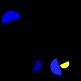
(1)
The darkest semicircle is yellow.
The uppermost blue shape is a semicircle.
The leftmost semicircle is blue.
The rightmost semicircle is yellow.
The leftmost blue shape is a semicircle.
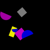
(2)
The blue shape farthest from the gray square is a semicircle.
The smallest semicircle is blue.
The leftmost blue shape is a square.
The blue shape farthest from the yellow rectangle is a semicircle.
The rightmost semicircle is blue.
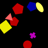
(3)
The biggest red shape is a cross.
The lightest red shape is a triangle.
The lowermost yellow shape is an ellipse.
The leftmost yellow shape is a circle.
The biggest pentagon is red.
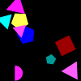
(4)
The lightest cyan shape is a triangle.
The uppermost cyan shape is a triangle.
The rightmost magenta shape is a triangle.
The lowermost cyan shape is a triangle.
The cyan shape farthest from the square is a semicircle.
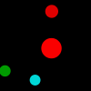
(5)
The uppermost red shape is a square.
The smallest red shape is a pentagon.
The lowermost red shape is a triangle.
The leftmost circle is green.
The biggest circle is red.
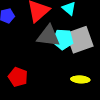
(6)
The triangle closest to the gray square is cyan.
The lightest gray shape is a square.
The leftmost red shape is a triangle.
The lightest gray shape is a square.
The leftmost gray shape is a triangle.
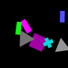
(7)
The darkest triangle is gray.
The darkest gray shape is a triangle.
The rectangle farthest from the cross is green.
The biggest gray shape is a rectangle.
The rectangle closest to the square is yellow.
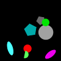
(8)
The pentagon closest to the semicircle is gray.
The rightmost ellipse is magenta.
The smallest pentagon is yellow.
The lightest green shape is a circle.
The darkest gray shape is a pentagon.

(9)
The rightmost magenta shape is a circle.
The smallest semicircle is magenta.
The magenta shape farthest from the ellipse is a circle.
The darkest magenta shape is a circle.
The rightmost green shape is a triangle.
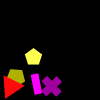
(10)
The rightmost pentagon is yellow.
The lightest pentagon is gray.
The magenta shape closest to the triangle is a triangle.
The lowermost yellow shape is a pentagon.
The darkest yellow shape is a pentagon.
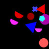
(11)
The leftmost semicircle is magenta.
The uppermost blue shape is a cross.
The lightest blue shape is a pentagon.
The lowermost magenta shape is a semicircle.
The lightest blue shape is a cross.
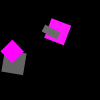
(12)
The rightmost gray shape is a square.
The square closest to the gray rectangle is red.
The rightmost magenta shape is a square.
The leftmost gray shape is a rectangle.
The uppermost gray shape is a square.
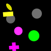
(13)
The lightest circle is gray.
The lightest yellow shape is a rectangle.
The biggest circle is green.
The lightest yellow shape is a rectangle.
The rightmost gray shape is a circle.
(14)
The leftmost cyan shape is a pentagon.
The lowermost red shape is a rectangle.
The lowermost cyan shape is an ellipse.
The lowermost ellipse is red.
The lowermost ellipse is red.
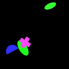
(15)
The biggest green shape is an ellipse.
The uppermost green shape is an ellipse.
The lowermost green shape is an ellipse.
The rightmost green shape is an ellipse.
The uppermost ellipse is gray.
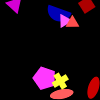
(16)
The uppermost magenta shape is a triangle.
The rightmost triangle is red.
The lowermost ellipse is gray.
The darkest magenta shape is a triangle.
The lightest ellipse is magenta.
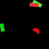
(17)
The lightest rectangle is green.
The lowermost green shape is a rectangle.
The lightest green shape is a rectangle.
The rightmost rectangle is green.
The darkest rectangle is yellow.
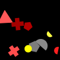
(18)
The leftmost pentagon is gray.
The lowermost yellow shape is a circle.
The lowermost yellow shape is a cross.
The darkest yellow shape is a pentagon.
The rightmost semicircle is red.
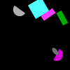
(19)
The rightmost magenta shape is a rectangle.
The gray shape farthest from the cyan shape is an ellipse.
The rightmost rectangle is cyan.
The lightest magenta shape is a square.
The lightest gray shape is a semicircle.
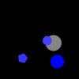
(20)
The lightest circle is blue.
The circle closest to the blue pentagon is blue.
The smallest circle is blue.
The leftmost blue shape is a cross.
The smallest circle is blue.
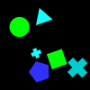
(21)
The lightest cross is cyan.
The cyan shape farthest from the circle is a pentagon.
The biggest cross is cyan.
The darkest cross is cyan.
The leftmost cross is red.
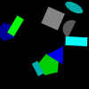
(22)
The smallest pentagon is green.
The darkest rectangle is blue.
The biggest cyan shape is a rectangle.
The rightmost rectangle is magenta.
The smallest rectangle is gray.
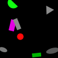
(23)
The uppermost gray shape is a triangle.
The ellipse farthest from the magenta shape is gray.
The darkest green shape is a semicircle.
The lightest ellipse is gray.
The darkest ellipse is green.
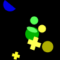
(24)
The rightmost yellow shape is an ellipse.
The biggest yellow shape is an ellipse.
The leftmost cross is yellow.
The circle farthest from the green ellipse is blue.
The lowermost circle is yellow.

(25)
The lowermost red shape is a triangle.
The rightmost triangle is yellow.
The uppermost triangle is red.
The lightest cyan shape is an ellipse.
The leftmost ellipse is cyan.
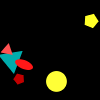
(26)
The lowermost red shape is a pentagon.
The rightmost red shape is an ellipse.
The darkest red shape is a pentagon.
The lowermost triangle is yellow.
The pentagon farthest from the cyan shape is gray.
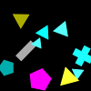
(27)
The smallest yellow shape is a cross.
The lightest yellow shape is a cross.
The lightest triangle is blue.
The triangle closest to the magenta shape is cyan.
The smallest pentagon is red.
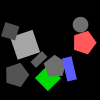
(28)
The lightest gray shape is a square.
The biggest gray shape is a square.
The biggest rectangle is green.
The biggest gray shape is a circle.
The gray shape closest to the green square is a pentagon.
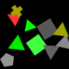
(29)
The lowermost triangle is gray.
The uppermost green shape is a triangle.
The uppermost triangle is red.
The uppermost triangle is red.
The green shape closest to the red shape is a triangle.
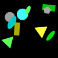
(30)
The biggest cyan shape is an ellipse.
The uppermost rectangle is yellow.
The uppermost gray shape is a rectangle.
The lowermost yellow shape is a triangle.
The biggest ellipse is cyan.
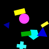
(31)
The biggest triangle is yellow.
The lowermost cyan shape is a pentagon.
The cyan shape closest to the circle is a circle.
The smallest blue shape is a triangle.
The leftmost triangle is yellow.
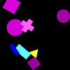
(32)
The biggest circle is yellow.
The smallest magenta shape is a circle.
The uppermost magenta shape is a circle.
The magenta shape closest to the blue shape is a circle.
The rightmost rectangle is cyan.
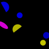
(33)
The blue shape closest to the yellow circle is an ellipse.
The blue shape farthest from the yellow semicircle is an ellipse.
The uppermost yellow shape is a semicircle.
The lowermost semicircle is blue.
The uppermost yellow shape is an ellipse.
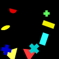
(34)
The triangle farthest from the green cross is red.
The cyan shape closest to the yellow triangle is a rectangle.
The biggest cross is green.
The leftmost rectangle is red.
The uppermost red shape is a semicircle.
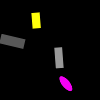
(35)
The biggest gray shape is a rectangle.
The biggest rectangle is gray.
The rectangle farthest from the ellipse is yellow.
The rightmost rectangle is gray.
The lightest rectangle is gray.
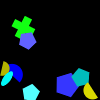
(36)
The biggest blue shape is a cross.
The lightest cyan shape is a pentagon.
The lowermost blue shape is a semicircle.
The yellow shape farthest from the blue semicircle is a semicircle.
The cyan shape closest to the green cross is an ellipse.
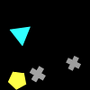
(37)
The rightmost cross is gray.
The uppermost gray shape is a square.
The rightmost gray shape is a rectangle.
The lowermost cross is gray.
The cross farthest from the pentagon is red.
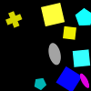
(38)
The smallest cyan shape is a pentagon.
The uppermost yellow shape is a square.
The lightest square is yellow.
The ellipse closest to the yellow cross is gray.
The square closest to the magenta ellipse is gray.
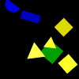
(39)
The darkest square is yellow.
The uppermost yellow shape is a triangle.
The lowermost blue shape is a rectangle.
The leftmost square is yellow.
The yellow shape closest to the blue semicircle is a square.

(40)
The smallest semicircle is yellow.
The lightest green shape is a cross.
The semicircle closest to the green circle is green.
The rightmost pentagon is blue.
The uppermost semicircle is gray.
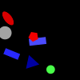
(41)
The lowermost blue shape is a rectangle.
The leftmost red shape is a pentagon.
The leftmost blue shape is a triangle.
The leftmost blue shape is a triangle.
The leftmost rectangle is blue.
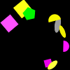
(42)
The lowermost square is magenta.
The leftmost square is magenta.
The ellipse farthest from the magenta semicircle is magenta.
The lightest ellipse is magenta.
The smallest square is magenta.
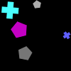
(43)
The darkest gray shape is a triangle.
The biggest cross is cyan.
The smallest pentagon is gray.
The rightmost pentagon is magenta.
The smallest cross is yellow.
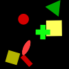
(44)
The rightmost square is yellow.
The uppermost red shape is a circle.
The lowermost square is green.
The lowermost yellow shape is a triangle.
The uppermost square is yellow.
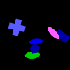
(45)
The lightest blue shape is a triangle.
The lowermost blue shape is a pentagon.
The rightmost blue shape is a rectangle.
The rightmost blue shape is a rectangle.
The uppermost blue shape is a cross.

(46)
The biggest blue shape is a circle.
The circle farthest from the magenta semicircle is blue.
The blue shape farthest from the magenta semicircle is a pentagon.
The biggest blue shape is a circle.
The uppermost circle is blue.
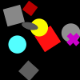
(47)
The lightest red shape is a square.
The rightmost square is red.
The uppermost red shape is a square.
The darkest square is green.
The darkest square is magenta.
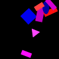
(48)
The rightmost magenta shape is a rectangle.
The red shape closest to the square is a rectangle.
The biggest magenta shape is a rectangle.
The lowermost rectangle is blue.
The rectangle closest to the blue square is blue.

(49)
The rightmost square is gray.
The smallest square is yellow.
The leftmost magenta shape is an ellipse.
The lowermost magenta shape is a square.
The lightest cyan shape is a triangle.
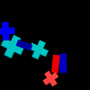
(50)
The biggest cyan shape is a cross.
The leftmost rectangle is blue.
The biggest cyan shape is a cross.
The biggest cyan shape is a cross.
The leftmost cross is blue.
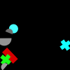
(51)
The lowermost gray shape is a semicircle.
The leftmost cross is gray.
The leftmost cross is green.
The darkest semicircle is red.
The semicircle farthest from the green cross is gray.
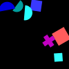
(52)
The blue shape closest to the cross is a square.
The uppermost square is blue.
The darkest semicircle is blue.
The lowermost cyan shape is a square.
The leftmost semicircle is magenta.
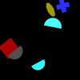
(53)
The biggest cyan shape is a semicircle.
The cyan shape closest to the cross is a semicircle.
The rightmost semicircle is gray.
The smallest cyan shape is a square.
The uppermost cyan shape is a semicircle.
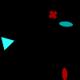
(54)
The uppermost cyan shape is a circle.
The uppermost red shape is an ellipse.
The uppermost red shape is an ellipse.
The uppermost red shape is an ellipse.
The lowermost red shape is a cross.
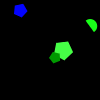
(55)
The uppermost green shape is a pentagon.
The rightmost pentagon is blue.
The leftmost pentagon is cyan.
The pentagon farthest from the green semicircle is yellow.
The biggest green shape is a pentagon.
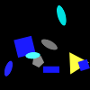
(56)
The darkest cyan shape is an ellipse.
The biggest square is gray.
The lowermost cyan shape is an ellipse.
The biggest square is yellow.
The biggest cyan shape is an ellipse.
(57)
The square farthest from the cyan shape is red.
The square closest to the gray rectangle is red.
The lightest blue shape is a rectangle.
The rightmost pentagon is blue.
The darkest blue shape is a pentagon.
(58)
The leftmost square is green.
The gray shape farthest from the blue shape is a square.
The leftmost square is green.
The green shape farthest from the gray square is a rectangle.
The leftmost gray shape is a rectangle.
(59)
The leftmost triangle is red.
The darkest red shape is a triangle.
The rightmost blue shape is a triangle.
The smallest triangle is blue.
The leftmost semicircle is green.
(60)
The smallest green shape is a pentagon.
The lowermost pentagon is yellow.
The lowermost yellow shape is a cross.
The darkest pentagon is green.
The uppermost yellow shape is a semicircle.

(61)
The smallest blue shape is a cross.
The rightmost green shape is a cross.
The uppermost cross is green.
The rightmost green shape is a circle.
The lightest blue shape is a semicircle.
(62)
The rightmost magenta shape is a triangle.
The leftmost triangle is cyan.
The rightmost yellow shape is a triangle.
The biggest yellow shape is a semicircle.
The uppermost ellipse is magenta.
(63)
The smallest cyan shape is a triangle.
The leftmost triangle is cyan.
The smallest rectangle is blue.
The leftmost blue shape is a rectangle.
The leftmost blue shape is a rectangle.
(64)
The uppermost triangle is yellow.
The green shape farthest from the gray triangle is a triangle.
The triangle farthest from the rectangle is blue.
The lowermost square is gray.
The green shape closest to the gray triangle is a rectangle.
(65)
The lightest cross is cyan.
The lowermost cross is green.
The uppermost cross is gray.
The cross closest to the triangle is gray.
The rightmost cross is gray.
(66)
The smallest circle is gray.
The ellipse farthest from the gray rectangle is red.
The magenta shape closest to the green ellipse is a cross.
The leftmost magenta shape is a rectangle.
The ellipse farthest from the gray shape is red.
(67)
The triangle farthest from the cyan shape is green.
The rightmost triangle is cyan.
The darkest square is blue.
The lightest blue shape is a pentagon.
The lightest green shape is a circle.

(68)
The uppermost green shape is a cross.
The cross farthest from the pentagon is red.
The uppermost green shape is an ellipse.
The leftmost green shape is a pentagon.
The green shape closest to the magenta shape is an ellipse.
(69)
The darkest cyan shape is a triangle.
The leftmost cyan shape is a cross.
The biggest cross is gray.
The leftmost cyan shape is a cross.
The darkest cross is blue.
(70)
The smallest red shape is a triangle.
The rectangle farthest from the gray shape is blue.
The smallest red shape is a rectangle.
The uppermost red shape is a circle.
The smallest rectangle is green.
(71)
The darkest yellow shape is a triangle.
The lightest yellow shape is a triangle.
The rightmost yellow shape is a circle.
The leftmost semicircle is magenta.
The lowermost semicircle is magenta.
(72)
The magenta shape farthest from the red circle is an ellipse.
The lowermost magenta shape is an ellipse.
The leftmost pentagon is yellow.
The biggest pentagon is red.
The leftmost red shape is a circle.
(73)
The rightmost semicircle is red.
The leftmost cross is red.
The semicircle farthest from the circle is gray.
The rightmost gray shape is a semicircle.
The gray shape farthest from the green cross is a cross.
(74)
The smallest triangle is yellow.
The smallest triangle is yellow.
The biggest triangle is yellow.
The rightmost triangle is gray.
The lowermost gray shape is a cross.
(75)
The rightmost magenta shape is a rectangle.
The lowermost cyan shape is a triangle.
The rightmost magenta shape is a semicircle.
The lowermost rectangle is blue.
The rectangle closest to the triangle is magenta.
(76)
The rightmost cross is cyan.
The darkest cross is blue.
The smallest rectangle is magenta.
The uppermost cross is cyan.
The leftmost cross is blue.
(77)
The rightmost cyan shape is a cross.
The biggest cyan shape is a square.
The uppermost circle is cyan.
The cyan shape closest to the green shape is a triangle.
The lowermost circle is gray.
(78)
The lowermost rectangle is red.
The biggest ellipse is red.
The darkest magenta shape is a semicircle.
The smallest magenta shape is an ellipse.
The darkest red shape is a rectangle.
(79)
The gray shape farthest from the square is a circle.
The leftmost semicircle is cyan.
The semicircle farthest from the cyan pentagon is gray.
The rightmost semicircle is gray.
The lowermost semicircle is gray.
(80)
The cross farthest from the red pentagon is green.
The uppermost cross is magenta.
The cross farthest from the red pentagon is yellow.
The leftmost cross is yellow.
The leftmost cross is yellow.
(81)
The smallest rectangle is gray.
The biggest rectangle is red.
The biggest rectangle is gray.
The uppermost rectangle is gray.
The biggest rectangle is gray.
(82)
The smallest semicircle is yellow.
The lowermost semicircle is yellow.
The uppermost semicircle is yellow.
The rightmost yellow shape is a cross.
The biggest semicircle is yellow.
(83)
The rightmost gray shape is a semicircle.
The uppermost cyan shape is a circle.
The smallest circle is gray.
The lightest gray shape is a circle.
The biggest gray shape is a triangle.
(84)
The uppermost gray shape is an ellipse.
The rightmost gray shape is a circle.
The uppermost gray shape is an ellipse.
The gray shape farthest from the cyan shape is an ellipse.
The lowermost gray shape is a circle.
(85)
The blue shape farthest from the magenta rectangle is a circle.
The rightmost ellipse is gray.
The rightmost magenta shape is a square.
The magenta shape farthest from the circle is a rectangle.
The lowermost magenta shape is an ellipse.
(86)
The lightest ellipse is red.
The darkest red shape is a pentagon.
The lowermost red shape is a cross.
The leftmost red shape is a cross.
The leftmost red shape is a triangle.
(87)
The gray shape farthest from the magenta semicircle is a cross.
The darkest gray shape is a pentagon.
The smallest gray shape is a cross.
The darkest gray shape is a cross.
The lowermost gray shape is a cross.
(88)
The rightmost square is gray.
The uppermost green shape is a square.
The green shape farthest from the gray circle is an ellipse.
The square farthest from the gray circle is green.
The square farthest from the gray circle is red.
(89)
The lightest yellow shape is an ellipse.
The smallest square is cyan.
The uppermost yellow shape is a rectangle.
The yellow shape closest to the blue square is a square.
The red shape closest to the circle is a cross.
(90)
The leftmost cross is red.
The red shape farthest from the green shape is a cross.
The lowermost cross is yellow.
The rightmost red shape is a semicircle.
The cyan shape closest to the red cross is a semicircle.
(91)
The lightest semicircle is gray.
The leftmost gray shape is a pentagon.
The uppermost semicircle is gray.
The magenta shape farthest from the blue shape is a square.
The lightest ellipse is magenta.
(92)
The biggest square is magenta.
The uppermost yellow shape is a triangle.
The rightmost square is green.
The rightmost square is magenta.
The square farthest from the yellow triangle is magenta.
(93)
The leftmost triangle is blue.
The leftmost cyan shape is a semicircle.
The lowermost rectangle is cyan.
The cyan shape closest to the blue shape is a square.
The triangle closest to the blue shape is magenta.
(94)
The lightest pentagon is blue.
The semicircle farthest from the blue ellipse is blue.
The darkest semicircle is green.
The biggest blue shape is a circle.
The darkest pentagon is green.
(95)
The smallest pentagon is blue.
The darkest yellow shape is a circle.
The darkest yellow shape is a rectangle.
The rectangle farthest from the blue pentagon is blue.
The uppermost blue shape is a circle.
(96)
The rightmost cyan shape is a square.
The smallest square is cyan.
The darkest square is red.
The uppermost square is cyan.
The uppermost cyan shape is a cross.
(97)
The red shape farthest from the yellow shape is a square.
The rightmost triangle is blue.
The lowermost triangle is blue.
The blue shape closest to the red cross is an ellipse.
The blue shape farthest from the green cross is a square.
(98)
The green shape closest to the cyan semicircle is a triangle.
The biggest green shape is a rectangle.
The rightmost cyan shape is a semicircle.
The lightest ellipse is green.
The lowermost green shape is a rectangle.
(99)
The biggest red shape is a rectangle.
The rightmost rectangle is red.
The leftmost rectangle is red.
The leftmost red shape is a semicircle.
The lightest red shape is an ellipse.
(100)
The darkest cross is gray.
The gray shape closest to the red shape is a circle.
The biggest cross is red.
The lowermost cyan shape is a cross.
The lowermost cross is red.